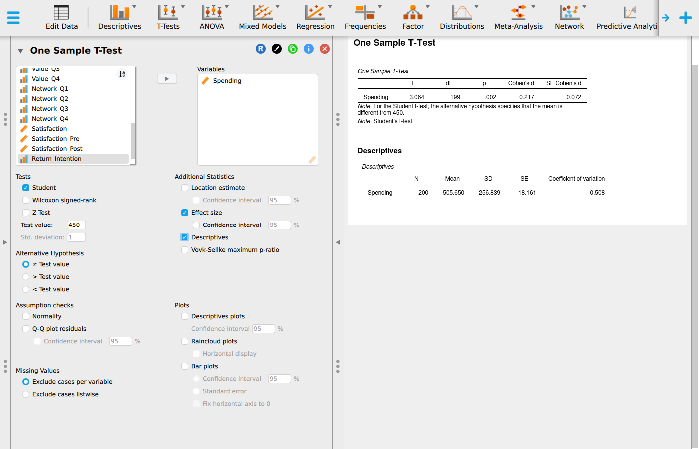
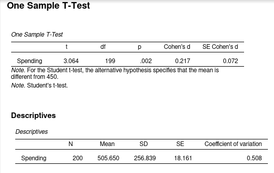
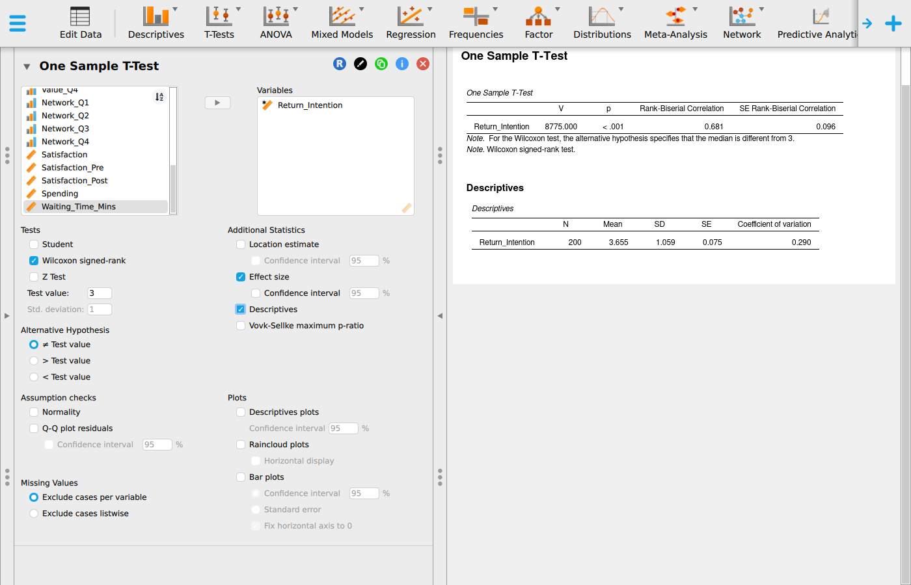

One mean against a benchmark
hypothesis testing, sampling variation, standard error, null hypothesis, t statistic, p-value, significance level, Type I error, Wilcoxon signed-rank test
Chapter 4: Single-sample Tests
The marketing plan for our events business assumed that each customer would spend 450 USD. Do our customers spend a different amount from the plan, or is the gap in our records just the luck of which customers we happened to record?
In chapters 1 and 2 we described our customers. In this chapter we test a claim about them. We compare one mean with a benchmark, such as a budget, a target or a service standard, and decide whether the gap is large enough to act on.
This chapter uses DMM_Teaching_Data_Full.csv, the same 200 customer records as chapters 1 and 2. Every figure quoted in it comes from that file. The dataset overview describes each column.
This chapter’s lecture
Lecture One-sample decisions in JASP
Discussion
1 Welcome and weekly goals
⏱ 10 min
Connect probability and normality to the logic of formal hypothesis testing with one sample.
Acquisition
2 One-sample testing logic
⏱ 30 min
How the one-sample t-test and the Wilcoxon signed-rank test answer different versions of the same management question.
Practice
3 Worked example and discussion
⏱ 15 min
Read a short output example and explain what conclusion is justified and what still needs practical judgement.
Assessment
4 Exit check
⏱ 5 min
A short exit check on one-sample test choice or interpretation.
Learning objectives
After studying this chapter you should be able to:
- Explain sampling variation, and calculate the standard error of a sample mean.
- State a null and an alternative hypothesis for a question about one mean.
- Calculate a t statistic for one sample mean against a benchmark.
- Read a p-value against a significance level of .05, use a critical value, and name the two errors a test can make.
- Check the assumptions of the one-sample t-test, run it, and report it with Cohen’s d.
- Choose between the one-sample t-test and the Wilcoxon signed-rank test, and report the Wilcoxon test.
This week’s learning plan is 9 hours: 1 hour of synchronous lecture, 2 hours of synchronous tutorial and 6 hours of asynchronous self-study. Put your self-study time into the worked examples, the Try It exercises and the checkpoint quiz first.
This chapter sets out the logic that every test in the rest of this book uses: chapters 5, 9, 10 and 11 all build on it. Read it before any other test chapter.
You are permitted to use Google NotebookLM to brainstorm the concepts. Complete the worked examples and the Try It exercises yourself, with no AI assistance. The full policy, and the reason NotebookLM is the only tool permitted, is on the Using AI on This Module page.
This chapter works in JASP. Keep a calculator beside you. Each calculation is worked by hand once, from the summary figures, before the software repeats it.
In chapter 2 we described the shape of one variable and checked whether it was close to normal. In this chapter we take one mean and ask whether it differs from a benchmark by more than chance alone would explain.
One mean, one benchmark
Our question compares the spending of our customers with the figure in the marketing plan. The file DMM_Teaching_Data_Full.csv records each customer’s spending in the column Spending, in USD. Across the 200 customers:
| Customers, \(n\) | Mean spending, \(\bar{x}\) | Standard deviation, \(s\) |
|---|---|---|
| 200 | 505.65 USD | 256.84 USD |
where \(n\) is the number of customers, \(\bar{x}\) (read “x-bar”) is their mean spending, and \(s\) is the standard deviation of their spending, all from chapter 1.
The plan assumed 450 USD a customer. Our customers spent \(505.65 - 450 = 55.65\) USD more than that on average. Before we tell the marketing team that the plan underestimated spending, we need to know whether the gap would still be there with a different set of 200 customers. A gap of this size could also come from the particular customers who happen to be in our file. The rest of this part builds the tool that separates the two explanations.
Sampling variation
In chapter 1 we met the difference between a population and a sample (population and sample). Our 200 customers are a sample. The population is every customer the company serves or will serve, and the marketing plan is a claim about that population.
For example: we draw 30 customers at random from our 200 and calculate their mean spending. Then we put them back and draw another 30, five times in all:
| Sample | 1 | 2 | 3 | 4 | 5 |
|---|---|---|---|---|---|
| Mean spending, USD | 590.07 | 495.94 | 520.23 | 532.32 | 548.12 |
All five samples come from the same 200 customers, yet the five means differ. The highest and lowest are \(590.07 - 495.94 = 94.13\) USD apart. The gap comes only from which 30 customers each sample happened to contain. This movement of a statistic from one sample to the next is called sampling variation.
Table 4.2 shows the problem. Two samples of the same customers can differ by more than the 55.65 USD gap between our mean and the plan. So we need to measure how large a gap sampling variation usually produces, and compare our gap with that measure.
The standard error of a mean
In chapter 2 we used the standard error of skewness (skewness against its standard error). A sample mean has a standard error too. The standard error of the mean measures how far a sample mean typically lies from the population mean, because of sampling variation alone:
\[SE_{\bar{x}} = \frac{s}{\sqrt{n}}\]
where \(SE_{\bar{x}}\) is the standard error of the mean, \(s\) is the standard deviation of the sample, and \(n\) is the number of cases in it.
For example: for a sample of 30 customers, the standard error is \(256.84 \div \sqrt{30}\), which is \(256.84 \div 5.477 = 46.89\) USD. That is the typical distance of each mean in Table 4.2 from the mean of all 200, 505.65 USD. For the full sample of 200, it is:
\[SE_{\bar{x}} = \frac{256.84}{\sqrt{200}} = \frac{256.84}{14.142} = 18.16 \text{ USD}\]
A larger sample gives a smaller standard error, because \(\sqrt{n}\) sits in the denominator. We know the mean of 200 customers to within about 18 USD, and the mean of 30 customers to within about 47 USD.
Stating the hypotheses
Before we look at any test result, we write our question as two competing statements about the population.
For example: either the population mean spending equals the plan’s 450 USD, or it differs from it. In symbols:
\[H_0: \mu = 450\] \[H_1: \mu \neq 450\]
where \(\mu\) (the Greek letter mu) is the mean spending of all customers in the population, and \(\neq\) means “is different from”. The benchmark in the hypotheses, here 450, is written \(\mu_0\) (“mu-nought”).
The first statement, \(H_0\), is the null hypothesis: the claim of no difference from the benchmark. The second, \(H_1\), is the alternative hypothesis: the claim that a difference exists. In a test we begin by assuming the null hypothesis is true, and then we ask how surprising our sample would be under that assumption.
Our alternative uses \(\neq\), so it allows a difference in either direction. This is a two-sided alternative, and every t-test in this book uses one. We use a two-sided alternative because we decided to test the plan before we knew whether customers spent more or less.
The t statistic
To compare our gap with the gap sampling variation produces, we divide one by the other.
For example: our gap is 55.65 USD, and the standard error is 18.16 USD. The gap is \(55.65 \div 18.16 = 3.06\) standard errors. In chapter 2 we read a z-score beyond 2 as unusual (z-scores), and the same reading applies here: a gap of three standard errors would be unusual if the plan were right.
This ratio is called the t statistic. For one mean against a benchmark it is:
\[t = \frac{\bar{x} - \mu_0}{SE_{\bar{x}}} = \frac{\bar{x} - \mu_0}{s / \sqrt{n}}\]
where \(\bar{x}\) is the sample mean, \(\mu_0\) is the benchmark from \(H_0\), and \(SE_{\bar{x}}\) is the standard error of the mean.
Each t statistic comes with its degrees of freedom, written \(df\). For one sample, \(df = n - 1\), so for our 200 customers \(df = 199\). JASP reports the degrees of freedom beside every t statistic, and an APA report gives them in brackets: \(t(199)\).
Worked example 4.1
Spending against the marketing plan
Use the figures in Table 4.1: 200 customers with a mean spending of 505.65 USD and a standard deviation of 256.84 USD. The marketing plan assumed 450 USD a customer.
State the hypotheses, then calculate the standard error, the t statistic and the degrees of freedom.
Step 1, the hypotheses: \(H_0: \mu = 450\) and \(H_1: \mu \neq 450\).
Step 2, the standard error:
\[SE_{\bar{x}} = \frac{256.84}{\sqrt{200}} = \frac{256.84}{14.142} = 18.16 \text{ USD}\]
Step 3, the t statistic:
\[t = \frac{505.65 - 450}{18.16} = \frac{55.65}{18.16} = 3.06\]
Step 4, the degrees of freedom: \(df = 200 - 1 = 199\).
Our mean lies 3.06 standard errors above the plan’s figure. JASP reports \(t(199) = 3.064\) from the unrounded figures.
The company promises customers a mean wait of 45 minutes. In the column Waiting_Time_Mins, the 200 customers waited a mean of 45.455 minutes, with a standard deviation of 11.905 minutes.
- State the null and alternative hypotheses.
- Calculate the standard error of the mean, to three decimal places.
- Calculate the t statistic and its degrees of freedom.
- \(H_0: \mu = 45\) and \(H_1: \mu \neq 45\), where \(\mu\) is the mean waiting time of all customers.
- \(SE_{\bar{x}} = 11.905 \div \sqrt{200} = 11.905 \div 14.142 = 0.842\) minutes.
- \(t = (45.455 - 45) \div 0.842 = 0.455 \div 0.842 = 0.54\), with \(df = 200 - 1 = 199\).
The mean wait is about half a standard error above the promise, a gap that sampling variation produces often.
The p-value
A t statistic of 3.06 looks large, but to decide we need a probability. We find it by asking how often a t statistic this far from zero would arise if the null hypothesis were true.
For example: suppose the plan is right and the population mean is 450 USD. Then samples of 200 customers give means scattered around 450, and their t statistics are scattered around zero. Most lie between \(-2\) and \(+2\). A t statistic of 3.06 or beyond, in either direction, arises in about 2 samples in every 1,000.
This probability is the p-value: the probability of a result at least as far from the null hypothesis as ours, if the null hypothesis is true. A small p-value means our result would be rare under the null hypothesis. A large p-value means results like ours are common under it.
JASP finds the p-value from the t distribution, a symmetric curve shaped like the normal curve from chapter 2 with slightly heavier tails. Its exact shape depends on the degrees of freedom, and with \(df = 199\) it is almost identical to the standard normal curve. The p-value is the area in both tails beyond \(t = -3.06\) and \(t = +3.06\). For our spending test, JASP reports \(p = .002\).
A p-value is a probability about the data, calculated on the assumption that \(H_0\) is true. “\(p = .002\)” means that a gap this large would arise in about 2 samples in 1,000 if the plan were right. The probability that \(H_0\) itself is true is a separate quantity, and a test leaves it open.
Making the decision
Before we run a test, we choose a threshold for the p-value. This threshold is the significance level, written \(\alpha\) (alpha). Business and social science research usually sets \(\alpha = .05\), and so does this book.
The decision rule has two branches:
- If \(p < .05\), we reject the null hypothesis. The difference is statistically significant: larger than sampling variation usually produces.
- If \(p \geq .05\), we retain the null hypothesis. The data are consistent with no difference in the population.
For a two-sided test at \(\alpha = .05\) with \(df = 199\), the p-value falls below .05 whenever \(t\) is beyond \(\pm 1.97\). This boundary is called the critical value. It gives a quick check when you have a t statistic and no software. With large samples the critical value stays close to \(\pm 1.97\). With 30 cases it is \(\pm 2.05\).
Retaining the null hypothesis leaves the question open. With a larger sample, a small real difference could still emerge. So we write “no statistically significant difference” and avoid “no difference”.
Worked example 4.2
Two budgets, two decisions
The marketing team asks us to test the 200 customers’ spending against two figures: the plan’s 450 USD, and a revised figure of 480 USD. JASP reports:
| Benchmark, \(\mu_0\) | \(t\) | \(df\) | \(p\) |
|---|---|---|---|
| 450 USD | 3.064 | 199 | .002 |
| 480 USD | 1.412 | 199 | .159 |
For each benchmark, decide whether to reject or retain the null hypothesis at \(\alpha = .05\), and write one sentence on what the decision means for the marketing team.
450 USD: \(p = .002\), which is below .05, so we reject the null hypothesis. The t statistic, 3.06, is also beyond the critical value of 1.97. Our customers spend more than the plan assumed, and the gap is larger than sampling variation usually produces.
480 USD: \(p = .159\), which is above .05, so we retain the null hypothesis. The t statistic, \((505.65 - 480) \div 18.16 = 1.41\), lies inside \(\pm 1.97\). Our mean is 25.65 USD above 480 USD, and a gap of that size arises often between a sample and its population. The revised figure is consistent with our records.
Two errors a test can make
We make each test decision from a sample, so each decision carries a risk of error. Two kinds of error are possible:
| \(H_0\) true in the population | \(H_0\) untrue in the population | |
|---|---|---|
| We reject \(H_0\) | Type I error: we report a difference that is absent | Correct decision |
| We retain \(H_0\) | Correct decision | Type II error: we miss a difference that exists |
The significance level sets the probability of a Type I error. At \(\alpha = .05\), if the null hypothesis is true, we reject it in 5 samples out of every 100. The probability of a Type II error depends mostly on the sample size: with a small sample we can miss a real difference, because the standard error is large.
For example: in worked example 4.2 we rejected the null hypothesis for 450 USD. If the population mean is in fact 450 USD, our decision is a Type I error. We retained the null hypothesis for 480 USD. If the population mean is in fact some other figure, such as 500 USD, our decision is a Type II error.
For each case, name the error that would occur, if any.
- A bank tests whether its mean waiting time differs from a 10-minute standard. In the population, the mean is 14 minutes. The test gives \(p = .310\).
- A retailer tests whether its mean delivery time differs from 3 days. In the population, the mean is exactly 3 days. The test gives \(p = .041\).
- A hotel tests whether its guests’ mean spending differs from 200 USD. In the population, the mean is 240 USD. The test gives \(p = .003\).
- Type II error: \(p = .310\) is above .05, so the bank retains the null hypothesis, yet the population mean differs from the standard by 4 minutes.
- Type I error: \(p = .041\) is below .05, so the retailer rejects the null hypothesis, yet the population mean equals the benchmark.
- No error: \(p = .003\) is below .05, so the hotel rejects the null hypothesis, and the population mean does differ from 200 USD.
Use your t statistic for waiting time from Try It 4.1, with \(df = 199\).
- Compare it with the critical value and decide whether to reject or retain the null hypothesis at \(\alpha = .05\).
- JASP reports \(p = .590\). Check that the p-value gives the same decision.
- Write one sentence for the operations manager.
- \(t = 0.54\) lies inside \(\pm 1.97\), so we retain the null hypothesis.
- \(p = .590\) is above .05, so we retain the null hypothesis: the same decision.
- The mean wait of 45.5 minutes is consistent with the 45-minute promise. The half-minute gap is well within what sampling variation produces.
Running the test in JASP
The figures in worked example 4.2 come from JASP’s one-sample t-test. To reproduce the first row, open DMM_Teaching_Data_Full.csv and follow these steps:
- Choose T-Tests → Classical → One Sample T-Test.
- Move
Spendinginto the Variables box. - Under Tests, keep Student ticked and type 450 in the Test value box.
- Under Additional Statistics, tick Descriptives and Effect size.

JASP prints the t statistic, the degrees of freedom and the p-value in one row, and the mean and standard deviation in the Descriptives table below it.

Change the test value to 480 and JASP updates the row to the second line of Table 4.3.
With Display exact p-values ticked, JASP prints p-values in scientific notation. To show three decimals, open the menu (☰), choose Preferences → Results and untick Display exact p-values. Keep Fix the number of decimals at 3.
Effect size and reporting
A p-value tells us whether a gap is larger than sampling variation usually produces. To judge how large the gap is, we compare it with how much the values vary from customer to customer.
For example: our customers spent 55.65 USD more than the plan, and spending varies with a standard deviation of 256.84 USD. The gap is \(55.65 \div 256.84 = 0.22\) of a standard deviation. This measure is Cohen’s d for one sample:
\[d = \frac{\bar{x} - \mu_0}{s}\]
where \(\bar{x}\) is the sample mean, \(\mu_0\) is the benchmark and \(s\) is the standard deviation. Cohen (1988) read 0.2 as small, 0.5 as medium and 0.8 as large, so \(d = 0.22\) is a small effect. JASP prints it as 0.217 beside the p-value.
In APA style: A one-sample t-test showed that mean spending (\(M = 505.65\), \(SD = 256.84\)) was higher than the planned 450 USD, \(t(199) = 3.06\), \(p = .002\), \(d = 0.22\).
For the manager: Customers spend about 56 USD more than the plan assumed, so the revenue forecast is cautious. The effect is small, so the plan needs adjusting more than rethinking.
The company aims for a mean satisfaction of 4.0. Across the 200 customers, Satisfaction has a mean of 3.814 and a standard deviation of 0.740.
- Calculate the standard error, the t statistic and Cohen’s d.
- JASP reports \(p < .001\). Write the result in one APA-style sentence.
- \(SE = 0.740 \div 14.142 = 0.0523\), \(t = (3.814 - 4.0) \div 0.0523 = -3.56\), and \(d = -0.186 \div 0.740 = -0.25\).
- Mean satisfaction (\(M = 3.81\), \(SD = 0.74\)) was lower than the target of 4.0, \(t(199) = -3.56\), \(p < .001\), \(d = -0.25\), a small effect.
The Wilcoxon signed-rank test
Some outcomes are ordered ratings. Return_Intention records each customer’s intention to return on a 1 to 5 scale. The step from 3 to 4 need not equal the step from 4 to 5, so a mean of these ratings can mislead. For ratings we compare ranks, and test the median.
For example: the manager asks whether customers lean towards returning, which means a typical rating above the scale midpoint of 3. In the file, 115 customers rated above 3, 29 rated below 3 and 56 rated exactly 3. The Wilcoxon signed-rank test sets aside the ratings equal to 3, ranks the remaining distances from 3 by size, and compares the ranks above 3 with the ranks below it.
Worked example 4.3
Intention to return
Test whether the median of Return_Intention differs from 3. Run the test in JASP, read the output, and write the result for the manager.
In JASP: use the same One Sample T-Test panel. Move Return_Intention into Variables, untick Student, tick Wilcoxon signed-rank, set the Test value to 3, and tick Effect size and Descriptives.

The output: \(V = 8775\) is the sum of the ranks above 3. \(p < .001\), so we reject the null hypothesis. The effect size is the rank-biserial correlation, \(r = .68\). It runs from \(-1\) to \(1\), and about .10 is small, .30 medium and .50 large, so this effect is large. The median rating is 4.
In APA style: Return intention (\(Mdn = 4\)) was higher than the scale midpoint of 3, \(V = 8775\), \(p < .001\), rank-biserial \(r = .68\).
For the manager: most customers lean towards coming back.
The two tests in this chapter answer the same question, one group against a benchmark, for different kinds of outcome:
| Outcome | Test | Compares |
|---|---|---|
| Scale, roughly normal or about 30 cases or more | One-sample t-test | The mean with the benchmark |
| Ordinal, or clearly skewed in a small sample | Wilcoxon signed-rank test | The median with the benchmark |
Value_Q1 is a 1 to 5 rating of the event’s value. Test whether its median differs from 3, and report V, p and the median.
The Wilcoxon signed-rank test gives \(V = 7279\), \(p < .001\), and the median is 4. Customers rate the value above the midpoint.
Section summary
A sample mean varies from one sample to the next, and the standard error of the mean, \(s / \sqrt{n}\), measures that sampling variation. A test begins from a null hypothesis of no difference and a two-sided alternative. The t statistic divides the gap between a sample mean and a benchmark by the standard error, with \(n - 1\) degrees of freedom. Its p-value is the probability of a result at least that far from the benchmark if the null hypothesis is true. At \(\alpha = .05\) we reject the null hypothesis when \(p < .05\), or equally when \(t\) is beyond the critical value of about \(\pm 1.97\). Rejecting a true null hypothesis is a Type I error, and retaining an untrue one is a Type II error. In the teaching dataset, customers spent 505.65 USD on average, 55.65 USD above the marketing plan’s 450 USD, \(t(199) = 3.06\), \(p = .002\), \(d = 0.22\). For an ordinal rating, the Wilcoxon signed-rank test compares the median with the benchmark using ranks: return intention (\(Mdn = 4\)) was above the midpoint of 3, \(V = 8775\), \(p < .001\).